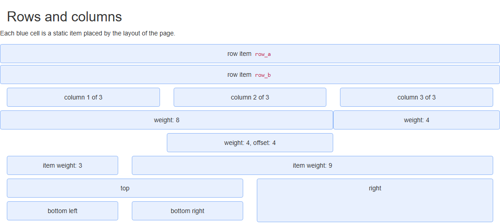
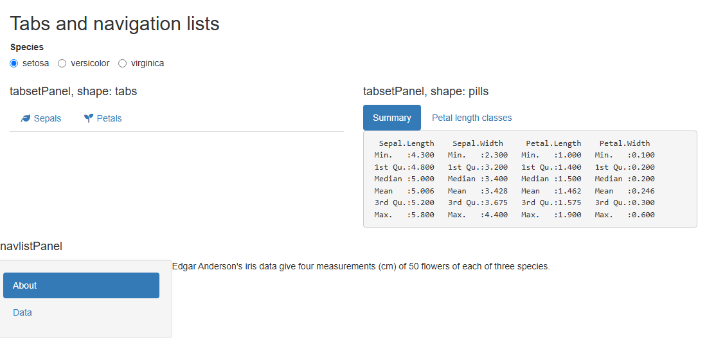
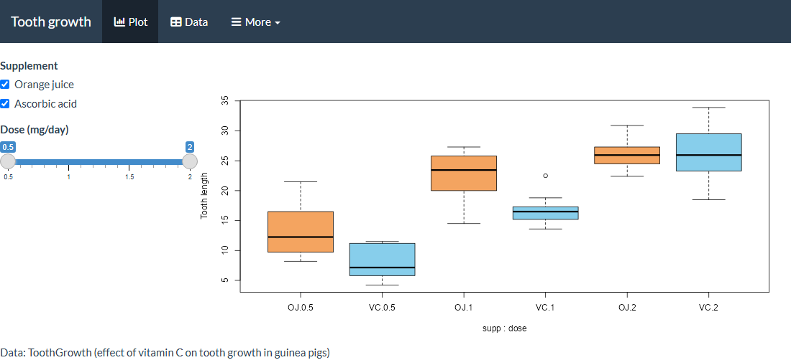
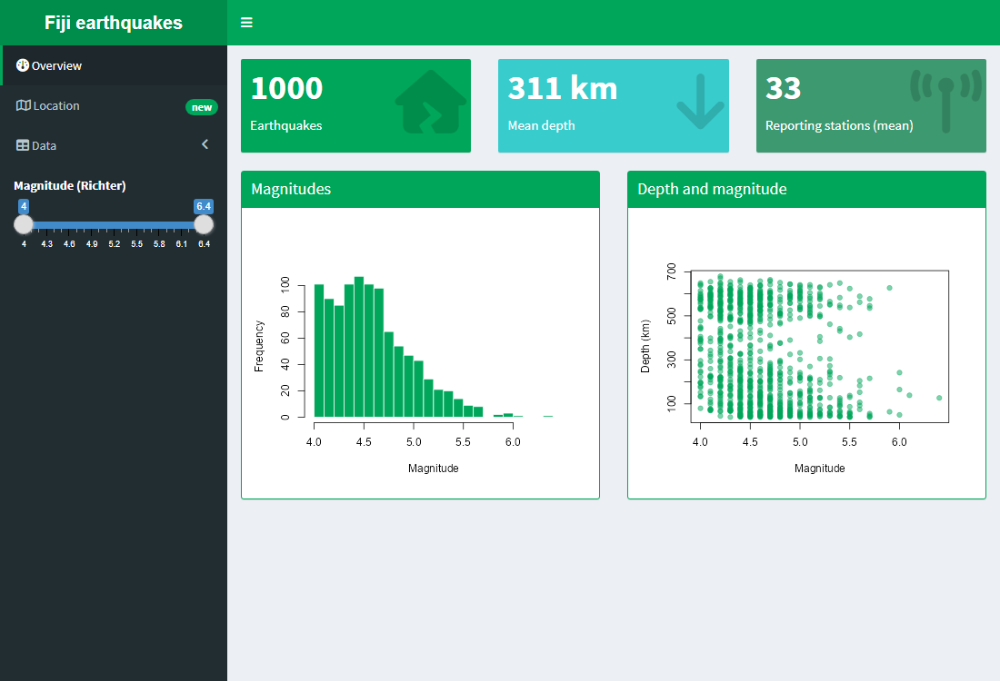
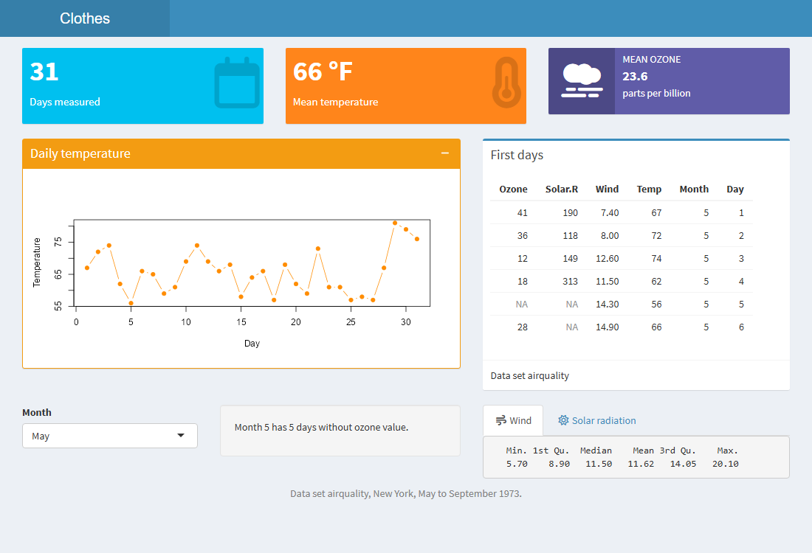

The page of a dashboard is made of containers: items
holding other items, given by name in their layout. This
guide shows the page containers (fluidPage,
sidebarLayout, navbarPage,
dashboardPage), the grid of rows and columns, tabs, and
clothes. All examples come with rvis: run them with
runDashboard(rvisDashboardExample("<name>")). Getting started introduces dashboards.
Rows and columns
The layout of a fluidPage (and of tabPanel,
tabItem and conditionalPanel) can be a list
which is turned into a grid of rows and columns (Bootstrap grid: a
row is 12 units wide):
- the elements of the layout are rows;
- a character element (item names) puts its items directly in the row or column;
- a list element of a row is a column, a list element of a column is a row, and so on;
- the width of a column is its
weight(or the mean weight of its items), or an equal share of the 12 units.offsetmoves the column to the right.
A column with settings is written as a mapping:
{weight: 4, offset: 1, items: [a, b]} (the field holding
the item names can have any name).
# Rows and columns: how a list layout is turned into a grid of rows and columns.
# A layout list alternates between rows and columns: the elements of a page layout are rows, the list
# elements of a row are columns, the list elements of a column are rows again, and so on.
# Character elements (item names) are put directly in the row or column.
name: Layout grid
layout: page
items:
page:
type: fluidPage
title: Rows and columns
layout:
- [style, intro]
# a row with two items (no columns): the items are stacked
- [row_a, row_b]
# a row with three columns: list elements of a row are columns, each gets 12/3 = 4 grid units
- - [col_1]
- [col_2]
- [col_3]
# column widths and offsets: weight and offset of the column (12 grid units make a row)
- - {weight: 8, items: wide}
- {weight: 4, items: narrow}
- - {weight: 4, offset: 4, items: centered}
# columns of single items take the weight and offset of their items
- - [w3]
- [w9]
# a column containing a row of two columns: nested lists
- - - [top]
- - [bottom_left]
- [bottom_right]
- [right]
style:
type: static
html: |
<style>
.cell {background: #e8f0fe; border: 1px solid #8ab4f8; border-radius: 4px; padding: 10px; margin: 4px 0; text-align: center;}
.cell code {background: none;}
</style>
intro:
type: static
html: <p>Each blue cell is a static item placed by the layout of the page.</p>
row_a: {type: static, html: '<div class="cell">row item <code>row_a</code></div>'}
row_b: {type: static, html: '<div class="cell">row item <code>row_b</code></div>'}
col_1: {type: static, html: '<div class="cell">column 1 of 3</div>'}
col_2: {type: static, html: '<div class="cell">column 2 of 3</div>'}
col_3: {type: static, html: '<div class="cell">column 3 of 3</div>'}
wide: {type: static, html: '<div class="cell">weight: 8</div>'}
narrow: {type: static, html: '<div class="cell">weight: 4</div>'}
centered: {type: static, html: '<div class="cell">weight: 4, offset: 4</div>'}
w3: {type: static, html: '<div class="cell">item weight: 3</div>', weight: 3}
w9: {type: static, html: '<div class="cell">item weight: 9</div>', weight: 9}
top: {type: static, html: '<div class="cell">top</div>'}
bottom_left: {type: static, html: '<div class="cell">bottom left</div>'}
bottom_right: {type: static, html: '<div class="cell">bottom right</div>'}
right: {type: static, html: '<div class="cell" style="height: 96px;">right</div>'}
With col.framed: true, the content of each column is put
in a well panel. A character vector layout
(layout: [a, b, c]) puts each item in its own row.
Sidebar layout
A sidebarLayout is a page with a title, a side panel
(layout.side) and a main panel (layout.main).
See the first dashboard and the gallery
apps Telephones by
region or Tabsets.
Tabs and navigation lists
A tabsetPanel shows one of its tab panels at a time
(shape: tabs or pills, selected
is the title of the first tab shown). A navlistPanel lists
its tabs on the left (widths of the list and of the
content). Tab panels are tabPanel items, or other items
with a tabPanel cloth.
# Tabs: tabset panels (tabs or pills) and a navigation list, made of tab panels.
name: Tabs
layout: page
items:
page:
type: fluidPage
title: Tabs and navigation lists
layout:
- [species]
- - [tabs_title, tabs]
- [pills_title, pills]
- [navlist_title, navlist]
species:
type: radioButtons
title: Species
choices: [setosa, versicolor, virginica]
inline: true
tabs_title: {type: static, html: "<h4>tabsetPanel, shape: tabs</h4>"}
pills_title: {type: static, html: "<h4>tabsetPanel, shape: pills</h4>"}
navlist_title: {type: static, html: "<h4>navlistPanel</h4>"}
# a tabset panel: its layout gives the tab panels
tabs:
type: tabsetPanel
selected: Sepals
layout: [sepal_tab, petal_tab]
# a tab panel has a title, an optional icon and a layout (item names or a list of rows and columns)
sepal_tab: {type: tabPanel, title: Sepals, icon: leaf, layout: [sepals]}
petal_tab: {type: tabPanel, title: Petals, icon: seedling, layout: [petals]}
# tab panels can also be given as clothes of the items
pills:
type: tabsetPanel
shape: pills
layout: [summary, counts]
summary:
type: verbatimTextOutput
service: summary(iris[iris$Species == input$species, 1:4])
cloth: {type: tabPanel, title: Summary}
counts:
type: tableOutput
service: as.data.frame(table(cut(iris$Petal.Length[iris$Species == input$species], 4)))
cloth: {type: tabPanel, title: Petal length classes}
# a navigation list: tabs listed on the left, widths of the list and the content (12 grid units in total)
navlist:
type: navlistPanel
widths: [3, 9]
layout: [about_tab, data_tab]
about_tab: {type: tabPanel, title: About, layout: [about]}
data_tab: {type: tabPanel, title: Data, layout: [data]}
about:
type: static
html: <p>Edgar Anderson's iris data give four measurements (cm) of 50 flowers of each of three species.</p>
data:
type: tableOutput
service: head(iris[iris$Species == input$species, ])
sepals:
type: plotOutput
height: 300px
service: plot(Sepal.Width ~ Sepal.Length, data = iris[iris$Species == input$species, ], pch = 19, col = "#4DAF4A")
petals:
type: plotOutput
height: 300px
service: plot(Petal.Width ~ Petal.Length, data = iris[iris$Species == input$species, ], pch = 19, col = "#984EA3")
Navigation bar pages
A navbarPage has a navigation bar of tab panels and
drop-down menus (navbarMenu). Its theme is the
path of a Bootstrap css file, for example from package shinythemes. The item
name is the id of the page: input$nav is the
value of the selected tab panel (its item name unless a
value is given).
# A navigation bar page with tabs, a drop-down menu and a bootstrap theme (package shinythemes).
name: Navbar page
layout: nav
items:
nav:
type: navbarPage
title: Tooth growth
# a theme: the path of a bootstrap css file, here from package shinythemes
theme: !expr shinythemes::shinytheme("flatly")
collapsible: true
footer: "Data: ToothGrowth (effect of vitamin C on tooth growth in guinea pigs)"
layout: [plot_tab, data_tab, more]
plot_tab:
type: tabPanel
title: Plot
icon: chart-column
layout:
- - {weight: 3, items: [supp, dose]}
- {weight: 9, items: boxplot}
supp:
type: checkboxGroupInput
title: Supplement
choices: {Orange juice: OJ, Ascorbic acid: VC}
selected: [OJ, VC]
dose:
type: sliderInput
title: Dose (mg/day)
min: 0.5
max: 2
value: [0.5, 2]
step: 0.5
boxplot:
type: plotOutput
service: |
d <- ToothGrowth[ToothGrowth$supp %in% input$supp & ToothGrowth$dose >= input$dose[1] & ToothGrowth$dose <= input$dose[2], ]
validate(need(nrow(d) > 0, "Select at least one supplement."))
boxplot(len ~ supp + dose, data = droplevels(d), col = c("#F4A460", "#87CEEB"), ylab = "Tooth length")
data_tab:
type: tabPanel
title: Data
icon: table
layout: [table]
table:
type: dataTableOutput
options: {pageLength: 10}
service: ToothGrowth
# a drop-down menu of tab panels
more:
type: navbarMenu
title: More
icon: bars
layout: [summary_tab, about_tab]
summary_tab: {type: tabPanel, title: Summary, layout: [summary]}
about_tab: {type: tabPanel, title: About, layout: [about]}
summary:
type: verbatimTextOutput
service: aggregate(len ~ supp + dose, data = ToothGrowth, FUN = mean)
about:
type: static
html: <p>The response is the length of odontoblasts in 60 guinea pigs, each receiving one of three dose levels of vitamin C by one of two delivery methods.</p>
shinydashboard pages
A dashboardPage (shinydashboard) has
a header (layout.head, title settings
header.title...), a sidebar (layout.side) and
a body (layout.body). Several pages are made with a
sidebarMenu of menuItems (with optional
menuSubItems) and tabItems holding
tabItems: a menu item shows the tab item with the same
tabName (the name of the tab item by default). The sidebar
menu is an input: input$menu is the selected tab.
# A shinydashboard page: header, sidebar with a menu, and body pages (tab items) selected by the menu.
name: Earthquakes
layout: dash
items:
dash:
type: dashboardPage
title: Earthquakes off Fiji
skin: green
# header title and its style
header.title: Fiji earthquakes
header.title.width: 250
header.title.font: verdana
header.title.font.weight: bold
header.title.hover.background.color: darkgreen
sidebar.width: 250
layout.side: [menu, magnitude]
layout.body: [pages]
# the sidebar menu: menu items select the tab items of the body with the same tabName
menu:
type: sidebarMenu
layout: [overview_menu, map_menu, data_menu]
overview_menu: {type: menuItem, title: Overview, tabName: overview, icon: gauge}
map_menu: {type: menuItem, title: Location, tabName: location, icon: map, badgeLabel: new, badgeColor: green}
# a menu item with sub-items
data_menu:
type: menuItem
title: Data
icon: table
layout: [table_menu, summary_menu]
table_menu: {type: menuSubItem, title: Table, tabName: table}
summary_menu: {type: menuSubItem, title: Summary, tabName: summary}
magnitude:
type: sliderInput
title: Magnitude (Richter)
min: 4
max: 6.4
value: [4, 6.4]
step: 0.1
# the body pages
pages:
type: tabItems
layout: [overview, location, table, summary]
overview:
type: tabItem
layout:
- [count, depth, stations]
- [histogram, depth_plot]
location:
type: tabItem
layout: [map]
table:
type: tabItem
layout: [quakes_table]
summary:
type: tabItem
layout: [quakes_summary]
# value box outputs: the service returns a value box
count:
type: valueBoxOutput
weight: 4
service: valueBox(sum(quakes$mag >= input$magnitude[1] & quakes$mag <= input$magnitude[2]), "Earthquakes", icon = icon("house-crack"), color = "green")
depth:
type: valueBoxOutput
weight: 4
service: valueBox(paste(round(mean(quakes$depth[quakes$mag >= input$magnitude[1] & quakes$mag <= input$magnitude[2]])), "km"), "Mean depth", icon = icon("arrow-down"), color = "teal")
stations:
type: valueBoxOutput
weight: 4
service: valueBox(round(mean(quakes$stations[quakes$mag >= input$magnitude[1] & quakes$mag <= input$magnitude[2]])), "Reporting stations (mean)", icon = icon("tower-broadcast"), color = "olive")
histogram:
type: plotOutput
height: 300px
service: hist(quakes$mag[quakes$mag >= input$magnitude[1] & quakes$mag <= input$magnitude[2]], breaks = 20, col = "#00A65A", border = "white", main = "", xlab = "Magnitude")
cloth: {type: box, title: Magnitudes, status: success, solidHeader: true, weight: 6}
depth_plot:
type: plotOutput
height: 300px
service: plot(depth ~ mag, data = quakes[quakes$mag >= input$magnitude[1] & quakes$mag <= input$magnitude[2], ], pch = 19, col = "#00A65A80", xlab = "Magnitude", ylab = "Depth (km)")
cloth: {type: box, title: Depth and magnitude, status: success, solidHeader: true, weight: 6}
map:
type: plotOutput
height: 500px
service: |
d <- quakes[quakes$mag >= input$magnitude[1] & quakes$mag <= input$magnitude[2], ]
plot(lat ~ long, data = d, pch = 19, cex = d$mag - 3.5, col = "#00A65A80", xlab = "Longitude", ylab = "Latitude", asp = 1)
cloth: {type: box, title: Locations (point size is the magnitude), weight: 12}
quakes_table:
type: dataTableOutput
service: quakes[quakes$mag >= input$magnitude[1] & quakes$mag <= input$magnitude[2], ]
cloth: {type: box, title: Earthquakes, weight: 12}
quakes_summary:
type: verbatimTextOutput
service: summary(quakes[quakes$mag >= input$magnitude[1] & quakes$mag <= input$magnitude[2], ])
cloth: {type: box, title: Summary, weight: 12}
The header title can be styled: header.title.color,
header.title.background.color,
header.title.font, header.title.font.weight
and header.title.font.size, and the same with
header.title.hover... when the mouse is over it.
Clothes
The cloth of an item wraps it in another element,
without a container item:
Cloth type
|
Settings |
|---|---|
box |
title, footer,
status (primary, success, info, warning, danger),
solidHeader, background (a colour),
weight, height, style,
collapsible, collapsed
|
valueBox |
title (the subtitle under the value),
icon, color, weight,
href
|
infoBox |
title, subtitle,
icon, color, weight,
href, fill
|
column |
weight, offset,
align
|
wellPanel |
|
tabPanel |
title, icon,
value
|
The value of a value box or info box is the result of the service of
the item (use a uiOutput). If the item has a
title, it is used as the title of its cloth.
# Clothes: any item can be wrapped in a box, info box, value box, column, well panel or tab panel
# with its 'cloth' field, without defining a container item.
name: Clothes
layout: dash
items:
dash:
type: dashboardPage
title: Clothes
header.title: Clothes
layout.body: [kpis, boxes, others, footer]
# rows of the body: boxes have a width, so they can be put in a row directly
kpis: {type: fluidPage, layout: [[days, temperature, ozone]]}
boxes: {type: fluidPage, layout: [[plot, table]]}
# a row of three columns (a list of lists): the column widths are the weights of their items
others: {type: fluidPage, layout: [[[month], [notes], [tabs]]]}
footer: {type: fluidPage, layout: [[source]]}
month:
type: selectInput
title: Month
choices: {May: 5, June: 6, July: 7, August: 8, September: 9}
weight: 3
# value box and info box clothes (shinydashboard): the service gives the value
days:
type: uiOutput
service: sum(airquality$Month == input$month)
cloth: {type: valueBox, title: Days measured, icon: calendar, color: aqua, weight: 4}
temperature:
type: uiOutput
service: paste(round(mean(airquality$Temp[airquality$Month == input$month])), "°F")
cloth: {type: valueBox, title: Mean temperature, icon: temperature-half, color: orange, weight: 4}
ozone:
type: uiOutput
service: round(mean(airquality$Ozone[airquality$Month == input$month], na.rm = TRUE), 1)
cloth: {type: infoBox, title: Mean ozone, subtitle: parts per billion, icon: smog, color: purple, weight: 4, fill: true}
# box clothes
plot:
type: plotOutput
height: 250px
service: |
d <- airquality[airquality$Month == input$month, ]
plot(d$Day, d$Temp, type = "b", pch = 19, col = "darkorange", xlab = "Day", ylab = "Temperature")
cloth: {type: box, title: Daily temperature, status: warning, solidHeader: true, collapsible: true, weight: 7}
table:
type: tableOutput
service: head(airquality[airquality$Month == input$month, ], 6)
cloth: {type: box, title: First days, footer: Data set airquality, status: primary, weight: 5}
# a well panel cloth
notes:
type: htmlOutput
service: tags$p("Month", input$month, "has", sum(is.na(airquality$Ozone[airquality$Month == input$month])), "days without ozone value.")
cloth: {type: wellPanel}
weight: 4
# tab panel clothes: items of a tabset panel
tabs:
type: tabsetPanel
layout: [wind, solar]
weight: 5
wind:
type: verbatimTextOutput
service: summary(airquality$Wind[airquality$Month == input$month])
cloth: {type: tabPanel, title: Wind, icon: wind}
solar:
type: verbatimTextOutput
service: summary(airquality$Solar.R[airquality$Month == input$month])
cloth: {type: tabPanel, title: Solar radiation, icon: sun}
# a column cloth: the item is put in a column of the given weight and offset
source:
type: static
html: <p style="text-align:center; color:grey;">Data set airquality, New York, May to September 1973.</p>
cloth: {type: column, weight: 6, offset: 3}
Other containers
| Container | Settings | Content |
|---|---|---|
column |
weight, offset
|
the items of layout in a column |
box |
title, footer,
status, solidHeader, background
(default blue), weight,
collapsible, collapsed
|
a shinydashboard box |
wellPanel |
a panel with a grey background | |
bag |
a plain div (items one after the
other) |
|
conditionalPanel |
condition (javascript, like
input.n > 5) |
shown only when the condition is true |
bsModal |
title, trigger (id of the
button opening it), size
|
a modal window (shinyBS) |
bsCollapse,
bsCollapsePanel
|
multiple, open;
title, value, style
|
collapsible panels (shinyBS) |
tutorBox |
tutor.lesson, tutor.step,
tutor.hint
|
a group highlighted in a guided tour (rintrojs) |
Containers can have a cloth too, for example a bag of
items with a box cloth. The item reference gives all settings,
and examples of modals, collapsible panels and guided tours.
Several items on the page
layout can list several items: they are put on the page
one after the other. The shinythemes gallery app
uses this to put a theme selector above a navbar page.